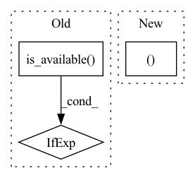

Pattern ID :12482
Before Change
size = (size[0], batch_size, size[2])
mu = Variable(torch.zeros(size))
logvar = Variable(torch.log(torch.ones(size)))
return mu.to(torch.device("cuda:0" if torch.cuda.is_available() else "cpu")), logvar.to(torch.device("cuda:0" if torch.cuda.is_available() else "cpu"))
After Change
size = (size[0], batch_size, size[2])
mu = Variable(torch.zeros(size))
logvar = Variable(torch.log(torch.ones(size)))
return mu.to(device), logvar.to(device)
In pattern: SUPERPATTERN
Frequency: 4
Non-data size: 3
Instances Fragment ID: 42391396
Project Name: pliang279/multibench
Commit Name: 857748ffc99cb38312836d2ff55fa787c5f66c1b
Time: 2023-04-14
Author: yuncheng@mars.multicomp.cs.cmu.edu
File Name: fusions/MVAE.py
M Class Name: AnonimousClass
N Class Name: AnonimousClass
M Method Name: _prior_expert(2)
N Method Name: _prior_expert(2)
M Parent Class:
N Parent Class:
M File Name: fusions/MVAE.py
N File Name: fusions/MVAE.py
M Start Line: 102
M End Line: 102
N Start Line: 105
N End Line: 105
Before Change
test_data_loaders[name] = config.init_obj([*keys, name], "data_loader", dataset)
// prepare model for testing
device = torch.device("cuda:0" if torch.cuda.is_available() else "cpu")
start = time.time()
for fold_idx in range(1, k_fold + 1):
// modelsAfter Change
test_data_loaders[name] = config.init_obj([*keys, name], "data_loader", dataset)
// prepare model for testing
device, device_ids = prepare_device(config["n_gpu"])
CV_manager = Cross_Valid.create_CV(k_fold=k_fold)
for fold_idx in range(1, k_fold + 1): Fragment ID: 42391394
Project Name: deeperlearner/pytorch-template
Commit Name: 7608563c835f03ed5613479dff763dcbff24e0ff
Time: 2021-03-29
Author: b04202035@g.ntu.edu.tw
File Name: test.py
M Class Name: AnonimousClass
N Class Name: AnonimousClass
M Method Name: main(1)
N Method Name: main(1)
M Parent Class:
N Parent Class:
M File Name: test.py
N File Name: test.py
M Start Line: 46
M End Line: 59
N Start Line: 34
N End Line: 62
Before Change
self.config = config
self.logger = config.get_logger("trainer", config["trainer"]["verbosity"])
self.device = torch.device("cuda" if torch.cuda.is_available() else "cpu")
self.model = model.to(self.device)
self.criterion = criterionAfter Change
self.logger = config.get_logger("trainer", config["trainer"]["verbosity"])
// setup GPU device if available, move model into configured device
self.device, device_ids = self._prepare_device(config["n_gpu"])
self.model = model.to(self.device)
if len(device_ids) > 1:
self.model = torch.nn.DataParallel(model, device_ids=device_ids) Fragment ID: 42391395
Project Name: deeperlearner/pytorch-template
Commit Name: 1923c38d7970416420590ee5e7a019a46f7d1f69
Time: 2020-11-11
Author: b04202035@g.ntu.edu.tw
File Name: base/base_trainer.py
M Class Name: BaseTrainer
N Class Name: BaseTrainer
M Method Name: __init__(6)
N Method Name: __init__(6)
M Parent Class:
N Parent Class:
M File Name: base/base_trainer.py
N File Name: base/base_trainer.py
M Start Line: 15
M End Line: 15
N Start Line: 16
N End Line: 21
Before Change
self.na = len(anchors) // number of anchors (3)
self.nc = nc // number of classes (80)
self.img_size = 0
device = torch.device("cuda" if torch.cuda.is_available() else "cpu")
create_grids(self, 32, 1, device=device)
if ONNX_EXPORT: // grids must be computed in __init__After Change
if cfg.endswith("yolov3-tiny.cfg"):
stride *= 2
ng = (int(img_size[0] / stride), int(img_size[1] / stride) ) // number grid points
create_grids(self, max(img_size), ng)
def forward(self, p, img_size, var=None): Fragment ID: 42391392
Project Name: nightsnack/yolobile
Commit Name: cfe354064cd599ae6ea902ffaa4dbd106d3a40fb
Time: 2019-04-21
Author: glenn.jocher@ultralytics.com
File Name: models.py
M Class Name: YOLOLayer
N Class Name: YOLOLayer
M Method Name: __init__(6)
N Method Name: __init__(6)
M Parent Class: nn.Module
N Parent Class: nn.Module
M File Name: models.py
N File Name: models.py
M Start Line: 110
M End Line: 119
N Start Line: 112
N End Line: 117